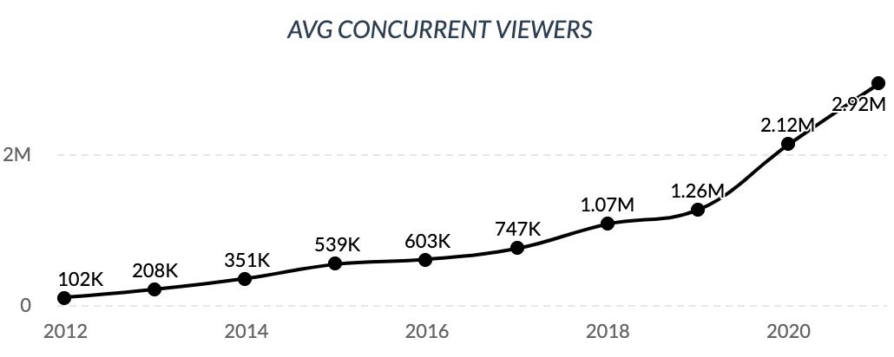
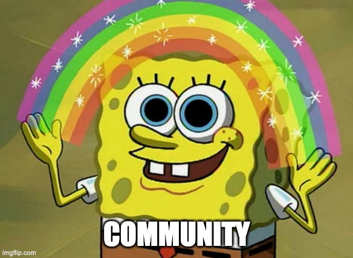

Personal issues I have with livestreaming and its culture.
A few notes before beginning:
In recent years, livestreaming has exploded in popularity, to the point that Twitch (formerly and originally Justin.tv, and now owned by Amazon—surprise, surprise) has become just one of many platforms. So-called "content creators" have now flocked to YouTube, Microsoft, and Facebook, some motivated by the companies' lucrative deals. Twitch viewership grew steadily from its 2011 inception up to March 2020, when it spiked due to the COVID-19 pandemic and quarantine procedures being in full effect.
But what makes livestreaming so popular? How can someone get so much enjoyment out of watching someone else play video games, or even "just chatting" without any activities?
The main reason seems to be that streamers often tout their channel as not just a channel where people watch games, but a community where they belong and their thoughts matter and are heard by the open ears of their role model. This warm, fuzzy, fictitious feeling of welcomeness and inclusivity appeals immensely to marginalized groups—they now have a voice, as opposed to the norm of being ignored at their school or job.
Streamers capitalize on this by branding their communities with a special nick- or crew-name. NICKMERCS, the second most popular Twitch streamer by subscriber count, calls his community MFAM (Mercs FAMily). New subscribers are sometimes personally welcomed into the group during the stream by Nick himself, giving them their three seconds of fame and a second, $5 life of being quickly forgotten and ignored. That is, until they contribute again. Why would a random viewer who contributes nothing be acknowledged? There can be thousands of them. But if you drop a few gifted subs, that'll get the streamer's attention and they may give you a shoutout. Hey, look! Three more possible seconds of fame for only a few bucks! What a steal!
This concept is called a parasocial relationship, best defined as:
Parasocial relationships are one-sided relationships, where one person extends emotional energy, interest and time, and the other party, the persona, is completely unaware of the other’s existence.
The viewer is obviously the one extending "motional energy, interest and time", while the streamer has no idea, and by extension no care, about the viewer. But does the viewer realize this oh-so-obvious fact? I can't say for sure. I'd expect that more than 50% of viewers know that the person they're watching doesn't know/care about them. My observations in watching the chats of a few popular streams is that it's a small percentage, judging by the messages that appeal directly to the streamer, e.g., "Hey [name] [question]", and donations in the form of bits (Twitch's currency system), direct payment, or subscriptions. Not rigorous or comprehensive by any means, but good enough for me.
Parasocial relationships arguably go hand-in-hand with role modeling. Typical advice tells you to never meet your heroes. I take it a step further and argue that one should never have heroes in the first place. There are people I respect, people I applaud for what they've contributed and accomplished, but there is no one I wish to emulate in their behaviors and accomplishments. On a general level emulation is fine and to be expected, but on a specific level? No. I want to be original. I want to contribute my own ideas to the world. I want to be my own person. And here's the prescription I warned about in the first bullet point of this essay: other people should want this, too. Who wants to be unoriginal? Who wants to take on the personality of someone who doesn't know, much less care, about them?
The other problem with role modeling is the quality (or lack thereof) of the personality. High-profile streamers got to where they are now based on personality and skill. There's a market for both extremes—exuberant personality with poor skill and highly-skilled with a boring personality—as well as everything in the middle, but getting the best of both worlds all but guarantees a following. These personalities aren't always positive, though. Take this argument between NICKMERCS and another streamer. I sure as hell don't want people in society role modeling Nick if that's how he acts to something so trivial. The degree to which these streamers are role-modeled can be seen in their chat sections and how viewers emulate their reactions. If the streamer gripes about something unreasonable and the viewers follow suit, it's safe to say there's significant role-modeling going on.
Further, are these the people and jobs that society should be role modeling?
In regards to career choices, the grind required to become a major streamer is admirable and not insignificant, but the corequisite of luck is often unknown or misjudged—many people believe that all it takes to make it big is hard work, which is absolutely false. I am not discounting the hard work it takes. It's just that there are many, many, many other highly-skilled and/or personable streamers who are equally as entertaining, but haven't had their big break of being discovered by the mainstream crowds yet. The success of streams follows a Pareto distribution: very few streamers have tens of thousands of subs, but tens of thousands of streamers have very few, if not zero, subs/viewers. It's safe to say that for the average person who is trying to make it big streaming, it probably won't happen. Sorry, pal. (None of this to say someone can't stream for fun. It's expectation of fame and fortune that begins the encroachment on dangerous, cognitively-dissonant territory.) In the end, those who role model these streamers and try to follow in their lucky footsteps will end up disappointed and with very little to show for their efforts.
However, there are positives to take away from these big-timers. Despite the popular belief that playing video games all day is easy ca$h, hard work is required to get where they're at. I've met a fairly popular YouTube streamer (4.9MM subscribers as of February 2021) and he confirmed it's a full-time job between the daily video editing, research on which videos do best, and creating the actual content (read: playing games). Consistency and dedication are also required. The most successful streamers seem to have a fairly consistent schedule, both in terms of days and time of day streamed. Some try to find ways to improve the viewership experience, whether by putting money they make directly back into the stream or finding free options. There's also something to be said about following a passion and putting skin in the game to achieve it. While I strongly disagree with blindly doing so—especially in streaming's case based on the previous paragraph—it is laudable seeing someone put it all out there to achieve a goal, no matter how statistically ignorant it may be. That takes cojones.
But, yet again, this is often lost on viewers. All the editing and hard work goes on behind-the-scenes, away from the eyes of the viewer. Streamers may casually mention their editor (if they have one), but it's in passing and never dwelled on. This lack of perceived effort creates a false sense of the actual effort required, which has resulted in burnout on occasion. Another factor contributing to burnout is the lack of novelty many top streamers experience. In order to maintain their viewership, streamers are practically forced to play popular games or the games they are well-known for, even if they don't want to. To play something else would lose viewers, and to lose viewers loses money. Thus the streamer plays hours upon hours of a game they're bored of just to receive those sweet, sweet donations and subs. Some wannabe streamers don't realize this until it's too late and they've lost interest in their hobby. For others, it's the best thing ever.
The next question that arises is if the streamers understand and appreciate the height of the pedestal they stand on. While there's no way to quantify this nor ask streamers for their answ..wait a second, I can just gift 10 subs and they'll answer me! Problem solved. But seriously, I'd argue a soft no understanding and a hard no to appreciating. It's difficult for anyone to imagine having a major influence on thousands of people, much less people who are effectively invisible. And there's really no way to measure that impact. The amount of subscribers is one kind of measure, but it can't necessarily measure the impact magnitude on an individual scale (some $5/mo subs worship the streamer a lot more than other $5/mo subs).
A major subset of role-modeling is the somewhat-recently-coined term simp, as Urban Dictionary so aptly defines:
'Simping' is the art of trying to act like a girl's boyfriend when you don't really even know her, when she already has a boyfriend, or when she has explicitly stated she is not interested in you romantically. The 'Simp' convinces himself that he is more important than he actually is AND that he is sexually desirable to his person of obsession. It's nothing but a delusion, but you bet your ass he will do anything and everything for his person of obsession, especially if she has a boyfriend. If she's got a boyfriend, the 'Simp' goes into full competition mode and sets himself out to prove he 'does things her shitty boyfriend would never do'. For his efforts, the 'Simp' receives almost nothing in return from the person he has targeted, and rightfully so. 'Simps' spend their money, time, and life giving everything to someone who gives them nothing in return except maybe a little attention every now and then just to keep them on the hook. Also, this is really important, some women are aware of the simp(s) in her life & some aren't. It all depends on the situation, so don't automatically assume every single female has a horde of 'Simps' that she's using to pay her rent and car insurance every month. However, If she is aware of her simp(s) AND has not cut them out completely, then you bet your ass she is entertaining them ever so slightly to be able to get what she wants out of them. More power to her though, you go girl, that's a fucking sweet deal.
And exemplifies:
Jason is simping hardcore, bro. He's giving Gabby rides to and from work every day, and he spent $250 on her birthday present. She even told him that her boyfriend forgot to get her a present, and that's the last thing he needed to know because now he's convinced himself he actually has a chance!
While this has become more a meme than anything, it still occurs, to the point that one female streamer put in her rules "No simp haters" (this doesn't seem sarcastic based on the other rules in her profile). Besides the girl's bank account, this is obviously unhealthy to everyone involved, especially the man. He is led on (sometimes, but not all the time) to believe that there is some chance the streamer will end up being romantically interested in him due to his donations and compliments, despite them not knowing anything about him, nor really caring.
The value of free time and its activities exist on a spectrum, i.e., some activities are much more valuable and productive than others. Working on a side business after work is subjectively productive to the business owner, but subjectively unproductive to the pessimist who predicts it will fail. Watching livestreams is borderline objectively unproductive and worthless.
Pretty much everyone watches streams because they enjoy watching them. Duh. But there are often other activities in peoples' lives that produce the same level of enjoyment while being much more productive. A few possible examples:
While I haven't personally heard someone say they make friends on streams, it has definitely been said before. This claim is highly unlikely. Given how fast the average multi-thousand-user chat moves, having any meaningful conversation with another viewer is impossible. Really the only way to "make friends on the stream" is to message them directly, and that takes time away from watching the stream, something neither party wants to do.
Making friends online is much easier than expected and would arguably be a stronger relationship than those formed via a video game stream.
Below is literature regarding livestreaming, online communities, and parasocial relationships: